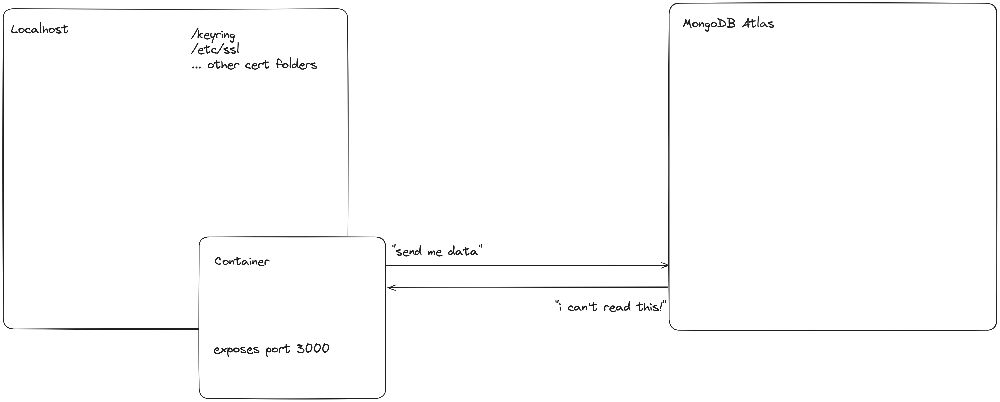
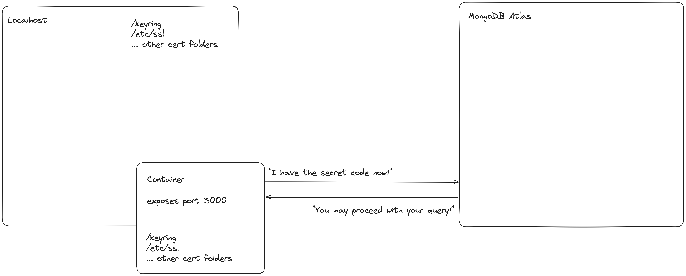

When developing in a container, in order for our http server to connect via TLS, we must have an updated certificate pool containing the public certificate for MongoDB Atlas
We need to load this certificate into our docker container and can set it at the /etc/ssl/certs/ca.pem folder, append it to the pool and run update-ca-certificates
Now our Mongo client will be able to connect to our database
I spent the weekend tinkering with my boilerplate go API, and wanted to wire up a version which used the go Mongo driver as I’ve never used it before. In doing so, I came upon an issue which others may bump into from time to time, and thought it would be a useful blog post.
MongoDB is a document database, and one of the most popular NoSQL solutions available. It makes it easy and quick to parse things like JSON objects or documents, store and query them in a non-relational manner. One cloud hosted provider for MongoDB is MongoDB Atlas, which I will be referencing for this blog post, although the topic is relevant to any platform.
Two aspects to consider when querying a database remotely are securing the data at rest, and securing the data in transit. At rest, we secure our data via at-rest encryption, authentication and authorization. By using systems like RBAC we can determine who may access what data, whether to reject a request etc.
In transit, we encrypt data using TLS traditionally. This involves a set of encryption keys, a private key used by the sender, and a public key that is sent to the receiver to allow them to decrypt the data. Signed certificates are stored and allow a client to “trust” a source; that is, validate that the public key is coming from who they claim to be.
Creating a Mongo client to connect to our database is quite simple. First, we fetch our Mongo driver module using go get http://go.mongodb.org/mongo-driver/mongo. The code to initalize our client is:
client, err := mongo.Connect(context.TODO(), options.Client().ApplyURI(uri))
where uri is the connection string to our database.
Suppose we now try to find a doc in our database via a command like:
coll := client.Database("my_database").Collection("stuff")
filter := bson.D{{"name", "samuel l jackson"}}
// Retrieves the first matching document
var result Actor
err = coll.FindOne(context.TODO(), filter).Decode(&result)
We are suddenly met with an error!
Could not connect to mongodb_s1.dev:27017 x509: certificate signed by unknown authority (possibly because of "crypto/rsa: verification error" while trying to verify candidate authority certificate "XYZ")

This is because our container does not have a valid signed certificate with the proper authorization to access our database. We can obtain this certificate from our MongoDB Atlas dashboard by selecting our project, then on the left side **Security → Database Access and selecting the user whom you want to grant access**. Click “Edit” beside this user, then “Certificate”. This will permit you to download an `x509` certificate which we will load into the Docker container.
Once the user is edit/created and the certificate is downloaded (do not check this in to github, store it somewhere secure!), we need to ensure this is loaded into our container on build and our certificate store is updated. This will allow our applications http server to trust our database connection URI origin and complete the client setup:
COPY path/to/mongoCert.pem /etc/ssl/certs/ca.pem
RUN apt-get update && apt-get install -y ca-certificates
RUN cp /etc/ssl/certs/ca.pem /usr/local/share/ca-certificates/ca.crt
RUN update-ca-certificates
COPY path/to/mongoCert.pem /etc/ssl/certs/ca.pem
This command copies the certificate file onto our containers file system.
RUN apt-get update && apt-get install -y ca-certificates
This command updates our package manager and installs the ca-certificates utility.
RUN cp /etc/ssl/certs/ca.pem /usr/local/share/ca-certificates/ca.crt
This command copies our certificate to the trusted certificate folder.
RUN update-ca-certificates
Removes revoked or expired certificates, writes out a new file containing updated/combined certificates.
Now when we rebuild our container, we can successfully query our database cluster!
